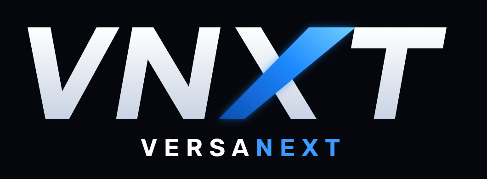

Security & Data Protection
Your business information is protected, backed up and always yours, so you can focus on running your organization.
Only the right people get in
Everyone has their own secure sign-in, with an optional second step for extra protection. Your team sees only what their role needs.
Your data stays yours
Each organization's information is kept completely separate. No other customer can ever see it.
Protected at every step
Your information is locked down while it's stored and while it travels, from your phone or computer to our systems.
Backed up automatically
Your data is backed up every day and can be restored to an earlier point if something goes wrong. We regularly test our backups to make sure they work.
A clear record of changes
See who changed what and when, so nothing gets lost and your team stays accountable.
Watched around the clock
We monitor your software 24/7, block suspicious sign-in attempts and keep everything up to date, with support whenever you need it.